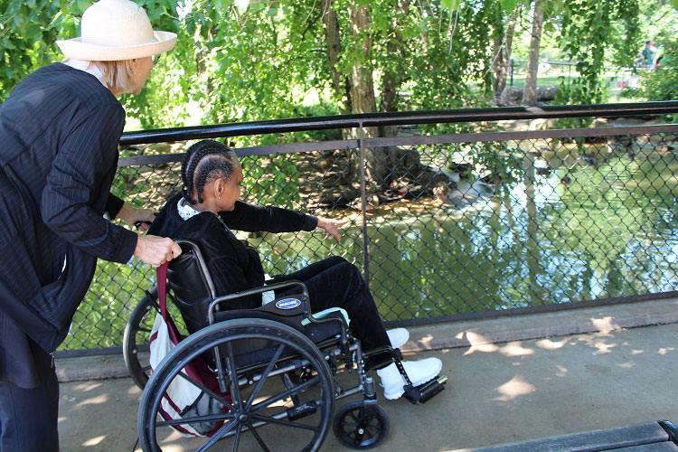
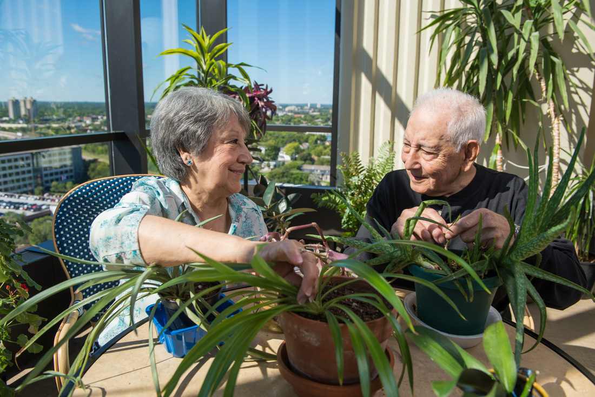

Activities:
- Creating seasonal fresh-cut floral arrangements
- Transplanting, growing and tending houseplants
- Learning about and planting seeds for plants to be used in our therapeutic gardens
- Planting and tending the fully handicapped-accessible gardens on campus
- Cooking with produce and herbs from our gardens
- Reading about nature and the great outdoors-related topics
- Learning how to attract birds and butterflies to our gardens
- Going on garden and nature-related outings to sites in the metro area and beyond
Life Long Learning:
Learning and growing helps everyone at every stage of life, and for seniors, the benefits are endless.
Ebenezer's Life Long Learning Initiative is a collection of coordinated arts and education programs designed to foster growth and creativity for seniors. Life-long learning is the process of keeping your mind, body and spirit engaged -at any age - by actively pursuing knowledge and experience.
Research has shown that with opportunities for self expression and discovery, seniors experience vibrant living, artistic growth as well as improved mental and physical health. Life Long Learning helps our residents stay connected to their world.
Recent Events
Last month our program participants took an outing to the Minnesota Landscape Arboretum! It was a beautiful day to take a look at the huge variety of plants this garden has to offer. Each senior got to enjoy some fresh air and beautiful scenery. Special thanks to our volunteers who assisted any residents with chairs and other mobility issues.
The first week of August, we held a class on transpotting houseplants. Every participant got to get their hands dirty and take home a freshly-potted low-maintenance plant for their apartment
Contact:
Paula Vollmar-Heywood
612-871-4594, pvollma1@fairview.org .
Ebenezer Tower Apartments
2523 Portland Ave. S.
Minneapolis, MN 55404
Ebenezer's Horticultural Therapy Program is supported solely by donations.
Our program has been recognized for its acheivements by Aging Services of Minnesota, Minnesota's largest statewide trade association for providers of older adult services. In 2015, the Horticultural Therapy Program and the Spiritual Care and Healing Garden recieved the "Innovation of the Year" award. This award is given to providers that have demonstrated creativity in programs and/or services to their customers.
We are honored to provide enriching experiences for our seniors and are driven to heal, discover and educate for longer, healthier lives. Please consider donating to this program at the link below.